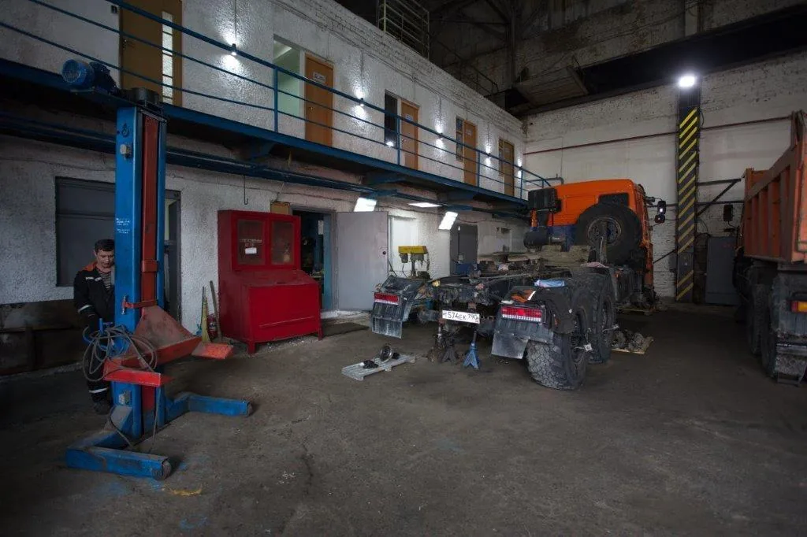
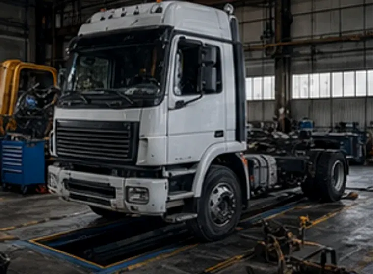
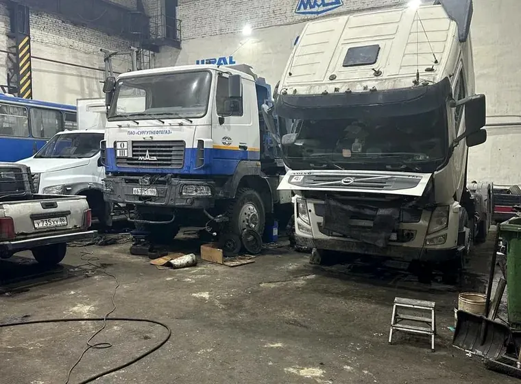
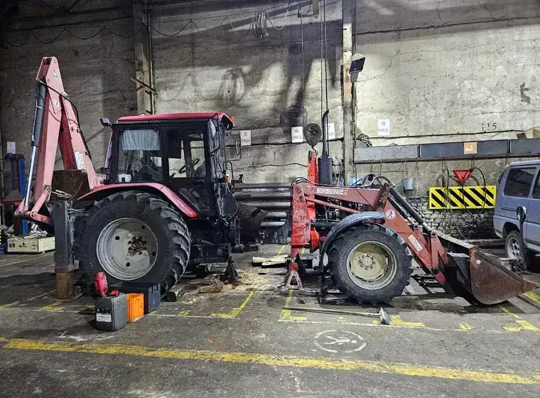
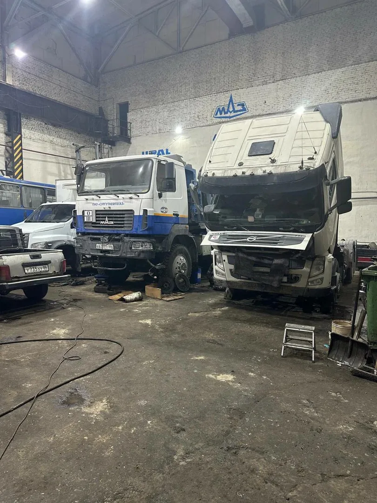
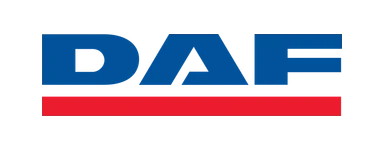

Двигатель
Диагностика, ремонт и капитальный ремонт двигателя, замена ГРМ, форсунки, турбины, ТНВД.
Профессиональный ремонт грузовых автомобилей, тягачей и спецтехники. Диагностика, качественные запчасти, гарантия на все работы.
Записаться на диагностикуРаботаем с отечественными и импортными грузовыми автомобилями, тягачами, полуприцепами, самосвалами и другой спецтехникой. Делаем всё — от диагностики до сложного капитального ремонта.
Наша цель — чтобы ваш грузовик всегда был в строю и приносил прибыль, а не стоял в ремонте.

Полный комплекс работ для грузовых автомобилей и спецтехники
Диагностика, ремонт и капитальный ремонт двигателя, замена ГРМ, форсунки, турбины, ТНВД.
Ремонт КПП, сцепления, редукторов, мостов, карданных валов.
Ремонт подвески, рессор, амортизаторов, рулевого управления, замена ступичных узлов.
Диагностика и ремонт пневмосистемы, ABS, замена тормозных механизмов и колодок.
Ремонт электропроводки, стартеров, генераторов, блоков управления, диагностика электроники.
Сварочные работы, техническое обслуживание (ТО), установка дополнительного оборудования.

Любые модели и комплектации

Все типы кузовов и грузоподъёмности

Рефрижераторы, изотермы, промтоварные

Открытые платформы, манипуляторы

Экскаваторы, погрузчики, краны, коммунальная техника

Грузовики до 7,5 тонн





Вы оставляете заявку или звоните нам.
Проводим диагностику и определяем проблему.
Сообщаем стоимость и сроки ремонта.
Выполняем работы с гарантией качества.
Проверяем и выдаём исправный автомобиль.
| Услуга | Цена от |
|---|---|
| Диагностика грузового автомобиля | от 1 500 ₽ |
| Ремонт двигателя | от 25 000 ₽ |
| Ремонт КПП | от 16 000 ₽ |
| Замена сцепления | от 12 000 ₽ |
| Услуга | Цена от |
|---|---|
| Ремонт ходовой части | от 4 000 ₽ |
| Ремонт тормозной системы | от 2 500 ₽ |
| Ремонт автоэлектрики | от 2 000 ₽ |
| Техническое обслуживание (ТО) | от 6 000 ₽ |
Точная стоимость определяется после диагностики. Цены указаны ориентировочно.
Срок зависит от неисправности. Базовая диагностика двигателя, ходовой части, тормозной системы или автоэлектрики обычно занимает меньше времени, чем поиск нестабильной или периодически возникающей неисправности. После осмотра мастер объяснит, что обнаружено, какие работы нужны и сколько времени займёт ремонт.
Обслуживаем седельные тягачи, самосвалы, фургоны, бортовые и малотоннажные грузовики, а также отдельные виды спецтехники. Работаем с автомобилями MAN, Volvo, Scania, Mercedes-Benz, DAF, Iveco, Isuzu, КАМАЗ, МАЗ и других марок.
Выполняем диагностику и ремонт двигателя, КПП и трансмиссии, ходовой части, тормозной и пневматической систем, автоэлектрики и электронных систем. Можно обратиться при потере мощности, посторонних стуках, проблемах с переключением передач, ошибках на панели приборов, утечках воздуха, неравномерной работе двигателя и других неисправностях.
Да. Сначала мастер определяет причину неисправности и объём необходимых работ. После диагностики можно понять, какие детали требуют ремонта или замены, сколько будут стоить запчасти и работа и какой срок потребуется на восстановление автомобиля.
Цена зависит от типа неисправности, сложности разборки, состояния узла, стоимости запчастей и объёма работ. Например, замена отдельного элемента ходовой части и капитальный ремонт двигателя отличаются по трудоёмкости в несколько раз. Поэтому точную стоимость лучше рассчитывать после диагностики.
Да, возможность установки запчастей клиента можно заранее согласовать с мастером. При этом важно, чтобы детали точно подходили к конкретной модели и модификации грузового автомобиля. Если нужных запчастей нет, поможем подобрать подходящий вариант для ремонта.
На выполненные работы предоставляется гарантия. Её условия зависят от вида ремонта и установленных деталей. Перед началом работ мастер может уточнить гарантийные условия именно для вашего автомобиля и выбранного варианта ремонта.
Да, сервис может обслуживать как отдельные грузовые автомобили, так и коммерческий транспорт компаний и автопарков. Можно обращаться по вопросам ремонта, диагностики и планового технического обслуживания грузовой техники.
Да. Если при диагностике выявлены неисправности сразу в нескольких системах, можно согласовать комплекс работ: например, ремонт ходовой части, тормозов и автоэлектрики. Такой подход удобен, когда важно вернуть автомобиль в эксплуатацию без нескольких отдельных визитов в сервис.
Стоит записаться на диагностику, если появились посторонние звуки, вибрации, снижение мощности, ошибки на приборной панели, проблемы с торможением, утечки воздуха, сложности с переключением передач или неравномерный износ шин. Ранняя диагностика часто помогает обнаружить неисправность до того, как она повлияет на другие узлы автомобиля.
Интервал зависит от марки, модели, пробега и условий эксплуатации. Для грузовиков, которые ежедневно работают с высокой нагрузкой, особенно важно регулярно проверять двигатель, тормозную систему, ходовую часть, пневматику, уровни технических жидкостей и состояние расходных материалов. Ориентироваться лучше на регламент производителя и фактическое состояние автомобиля.
Позвоните мастеру, назовите марку автомобиля и опишите неисправность — уточним, с чего начать диагностику.